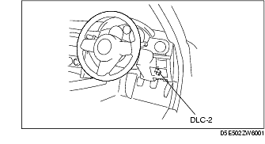

Troubleshooting ➭ TRANSMISSION/TRANSAXLE ➭ AFTER REPAIR PROCEDURE [SJ6A-EL]
AFTER REPAIR PROCEDURE [SJ6A-EL]
id050208800400
• After repairing a malfunction, perform this procedure to verify that the malfunction has been corrected. • When this procedure is carried out, be sure to drive the vehicle at lawful speed and pay attention to the other vehicles.

• When using the IDS (laptop PC)
• When using the PDS (Pocket PC)
-
Select "Module Tests". 2. Select "TCM". 3. Select "Self Test".
-
Perform the following trouble code inspections to ensure that the DTC has been resolved: